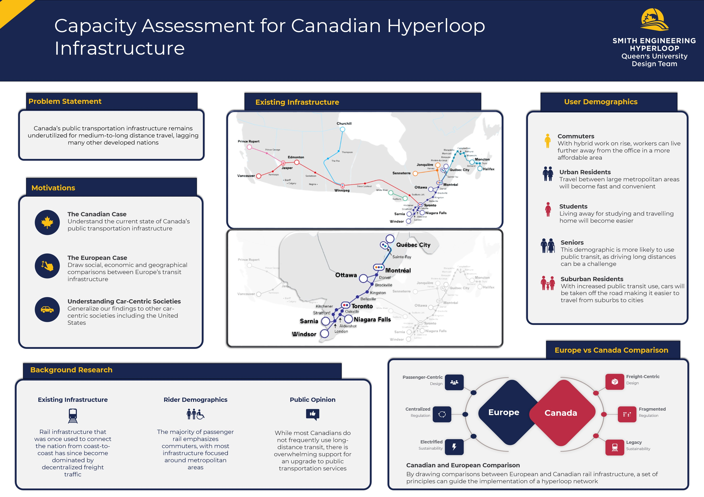
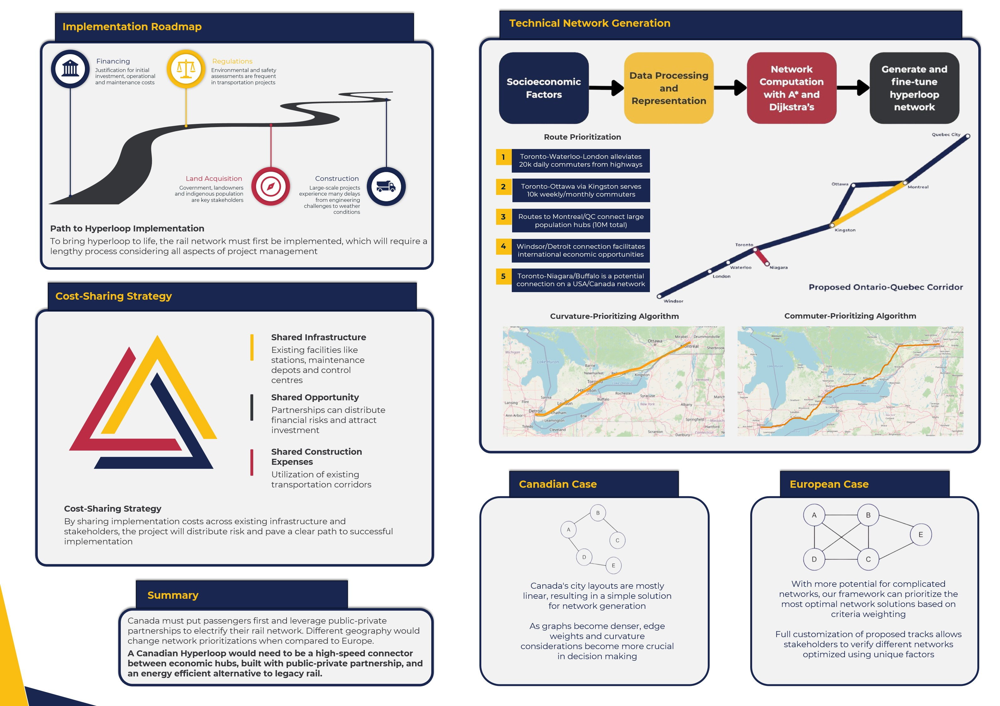

NAME

European Hyperloop Week 2025 was hosted in Veendam, a picturesque town a 30 minute train ride from Groningen, in the Netherlands. My friend and I booked a bed and breakfast (shoutout Betsie) close to the venue, but the town was so small we had to rent bikes all the way from Groningen. We lived off Lidl and Albert Heijn for a week, and went out almost every night - my highlight was a silent disco where we requested country tunes from our home university’s beloved Tumble Tuesday tradition. It wouldn’t be a Dutch party without Joost’s Europapa though, and our non-Eurofan teammates had to endure our broken Dutch rapping.
Meeting the other students was huge too. We asked Spanish students from Valencia about whether they really siesta, and adopted British students who’d come as the sole representative of their teams. We helped a Turkish student set up his poster, talked Eurovision with Germans, and compared Polish train architecture to Canada’s. Of course, we had to beat the Dutch at their own games, and, well, we would’ve made our university’s culture proud. In that vein, we did present our research (viewable below), and although that was my excuse for doing a Europe trip, it was still only halfway for me.
After a sleepless night in Amsterdam Sloterdijk, I got on a bus to Brussels, where I met my Belgian friend and promptly passed out for an entire day. The next day I rode my first high speed train to Paris, and pit stopped at Bercy before Flixbussing through the night to Barcelona. I was able to hit the Sagrada Familia and explore my new campus building before having to take my early flight back home.

